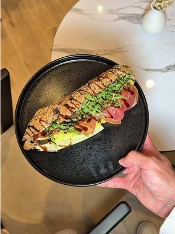
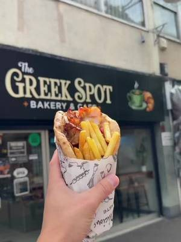
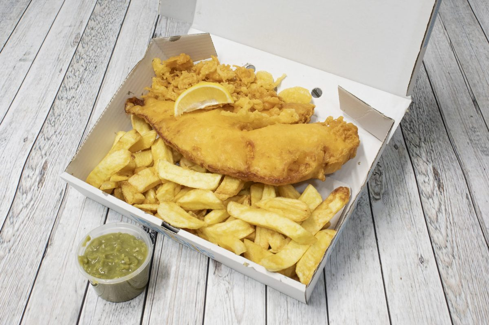
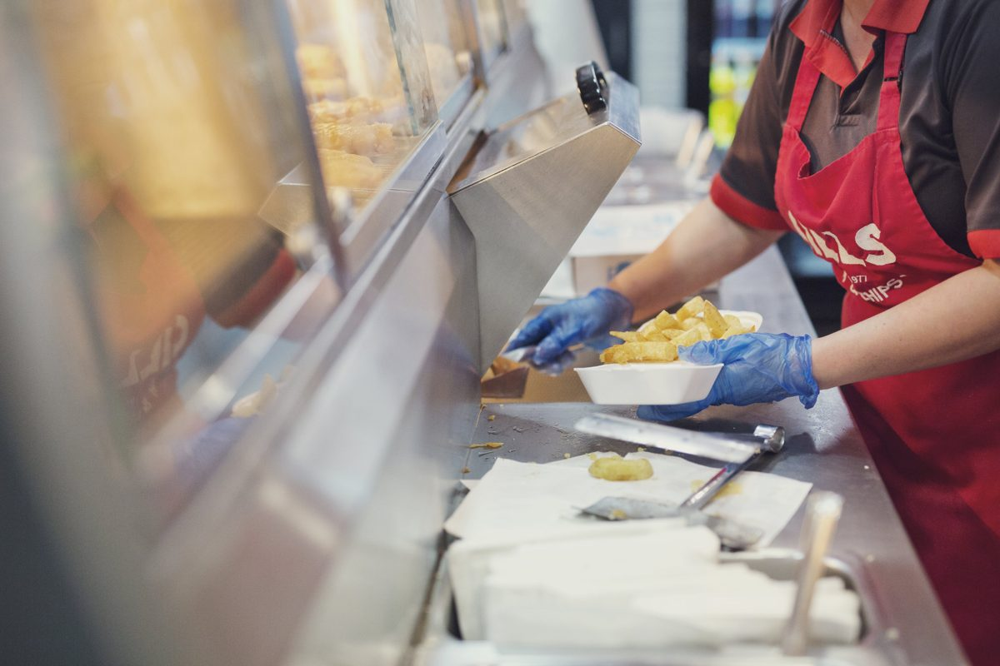
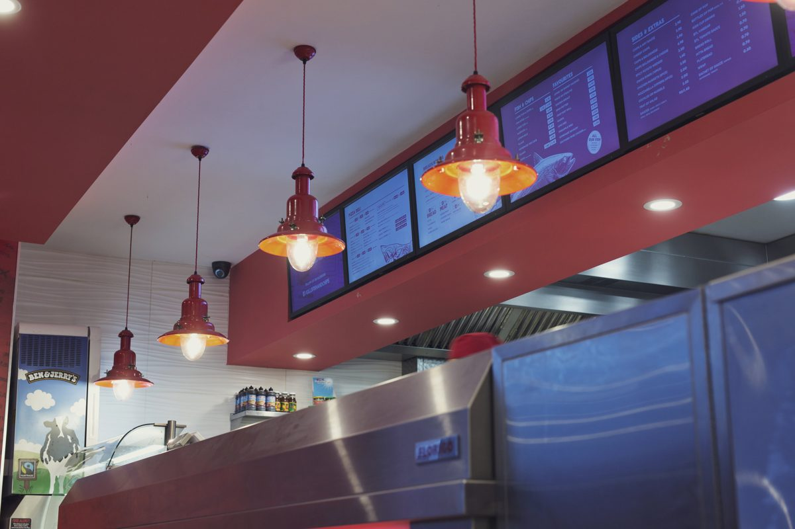
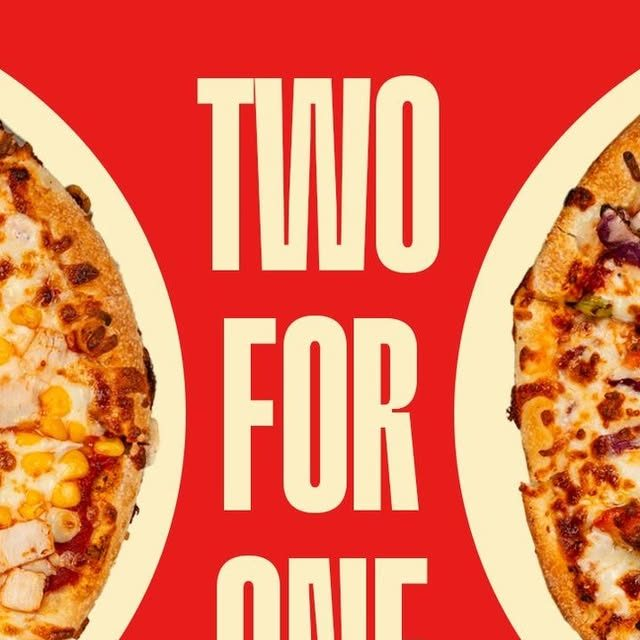
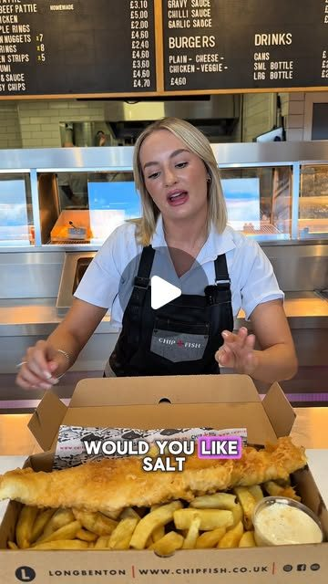
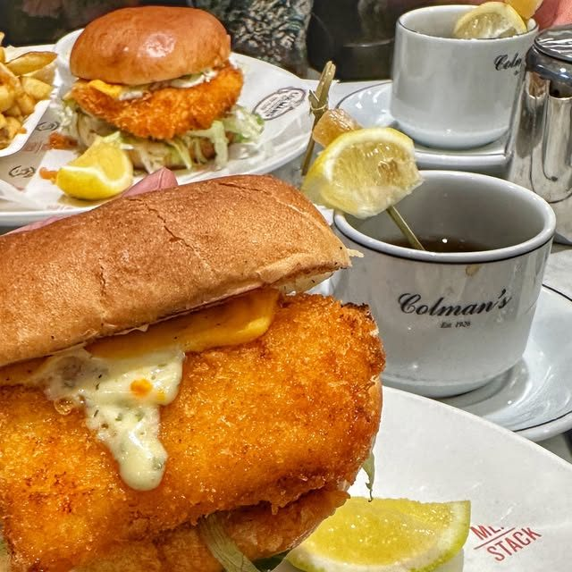

In August 2024 a Gills reel earned 287K likes on Instagram. Since mid September your posts have earned 1 to 3 likes each. The difference is not your food or your shops. It is the format. We read your website, your Instagram and two North East chippies doing well on social, and set it next to what has worked for the food businesses we film. This is what we found, the videos we would make, and our rates.
Prepared forSonny
Prepared byJay Williams, Fusion Creative
Checked on5 October 2026
CoversWebsite, social, local chippies, ideas, rates
A North East name since 1977, posting graphics nobody stops for.
Gills has more to work with than almost any chippy we look at: six shops plus a delivery kitchen, a menu that covers the whole family, live deals every week and a 5 star food hygiene rating at every venue. You have already proved the account can reach a huge audience. What is missing is a steady run of short videos with your shops, your team and your food in them, so people across Tyneside think of Gills when they decide what is for tea tonight.
1,495
Instagram followers, from 589 posts
287K
likes on your reel from August 2024
1 to 3
likes on each post since 12 September
6
shops, each with a 5 star food hygiene rating
What is already strong, and worth building on
Serving the North East since 1977, a story most takeaways cannot tell.
Six shops from Ponteland to Sunderland, plus Silverlink for delivery.
Fish and chips, pizzas, kebabs, burgers and wraps, so "no need for one member of the family to compromise" on treat night, in your own words.
Live deals people can act on today: 40% off classic pizzas Monday to Wednesday, two pizzas for one on the app, a pizza slice at lunch for under £2.
A Meta pixel is already on your website, so people who watch your videos and then visit can be reached again later.
You do not need a new menu or a new logo. You need short video of the fryer, the counter and the people, posted on a plan, so the shops are busy every night of the week and not just on Friday.
02 · What has worked for places like yours
Real people, in the venue, doing something worth watching.
Nine videos we planned and filmed for restaurants we work with, each a different format: a skit, a dish moment, a trend, a challenge, a launch, a new dish, an offer, a hero product and a local call-out. Every one gives people a reason to watch and a reason to order.
70M
views on one reel for New Greek in Newcastle
3.5M
views on one reel for Takdir in Whitley Bay
+40%
weekly sales for New Greek, in the owner's own words
Skit, 70M viewsNew Greek, Newcastle: "There's always the one impatient customer." A skit at the counter.Dish moment, 3.3M viewsNew Greek, Newcastle: "The ONLY way to eat a Greek salad." One dish, turned into something people argue about.Trend, 535K viewsTakdir, Whitley Bay: A trending format, filmed in the restaurant within days of it taking off.Challenge, 255K viewsNew Greek, Newcastle: "5 bites or less wins £20." A challenge people come in to try.

Launch, 92K viewsNew Greek Bakery, Newcastle: "The Taste of Greece has landed in Newcastle." An opening, announced on video.New dish, 90K viewsTakdir, Whitley Bay: "Have you tried our Nachodoms?" A new dish, introduced by a person, not a menu photo.Offer, 67K viewsTakdir, Whitley Bay: "All for £20? Yes please." An offer shown on camera, not just posted as a graphic.Hero product, 60K viewsNew Greek Bakery, Newcastle: "The best sandwich in Newcastle?" One product, one question.

Local call-out, 44K viewsThe Greek Spot, Middlesbrough: "Attention Middlesbrough gyros lovers." A video that speaks to one town.
A reason beats a nice shot. A fish supper on its own rarely travels. The same supper with a joke, a challenge or a deal does. Your 287K reel proves it.
The shop is the set. Your counter, your fryer, your team. We film in the places people order from.
It is planned, not luck. We know which formats work before we arrive, and we pick the mix for your menu and your week.
View counts from our own client dashboard, checked 3 October 2026. Sales figure from the New Greek owner's own review.
03 · Your website
A website that takes orders, with a few things holding it back.
The site has every shop, every phone number, the deals and an order button for each location. These are the changes we would make so it works harder for the video.
What we saw
Why it matters
Fix
The menu is a PDF
The menu and the deals are downloads. On a phone that is an extra step before anyone orders.
Put the top dishes and this week's deal on the page as text, next to the order buttons.
Correct them. People check the hours right before they order.
It looks out of date
The footer says 2019 and the latest news post is from January 2024.
Update the footer and add a short "This week at Gills" line that every video can point to.
A building tender sits in the menu
The Projects page is a contractor tender for a production kitchen, linked from the main menu, and "About" opens the blog.
Move the tender off the customer menu and give About your story since 1977.



Photos from your own website. The counter, the boxes and the team are exactly what we would film.
04 · Your social channels
You already had the hit. The posts since then are graphics.
1,495
Instagram followers
287K
likes on the August 2024 reel, with 943 comments
29K
likes on the "chippy chips only" reel
1 to 3
likes on each graphic since 12 September
A member of your team posts for Gills now, and posts often. The pattern in your recent posts:
Funny beats offers. The two reels at the top of your grid are jokes about chippy food, and they earned 287K and 29K likes. Every post since 12 September is a graphic, mostly offers, and none has passed 3 likes.
The same graphic, twice. The pizza slice, the garlic bread deal and the two for one pizzas were each posted twice in September. Repeats teach followers to scroll past.
No people, no shops. None of the recent posts shows the fryer, the counter, your team or a customer. That is what makes a local person stop.
What this means. The deals are good. They just need a person, a joke or a challenge in front of them. Short video of real moments in your shops, posted on a plan, is how they reach people across Tyneside who do not follow you yet.
Source: instagram.com/gillsfishandchips public profile and posts, checked 5 October 2026.
05 · Two North East chippies
Who is winning attention for chippy teas, and how.
We looked at two North East fish and chip shops that do well on Instagram: one a short drive from Heaton Road and Wallsend, one with shops in South Shields and Newcastle. A keyword search of the Meta Ad Library for fish and chips in Newcastle found no local chippy advertising, so this is about organic social. Checked on 5 October 2026.
Venue
Instagram
Meta ads
What gets attention
Best recent post
Gills Fish and Chips Six shops across the North East
1,495
About 12 in total from the Sunderland page, none live today
Funny reels, then offer graphics
3 likes (287K on the 2024 reel)
Chip & Fish Benton Road, Longbenton
1,128
None found
A team member on camera at the counter, their award
218 likes, a "Who's ordering?" reel
Colmans South Shields and Fenwick, Newcastle
1,985
None found
A collab with Meat:Stack, the Great North Run, their centenary
465 likes, the Hot Fish Sarnie collab
What the numbers say
Chip & Fish puts a person on screen. One of their team at the counter, a fish supper going in the box, 218 likes. Their deal and opening-time posts earn 2 to 8.
Colmans turns news into an event. A burger collab with Meat:Stack and the Great North Run were their best recent posts.
Nobody nearby is advertising. That makes Meta ads cheap to reach Heaton, Wallsend and Gateshead whenever you want to add them.
Sources: public Instagram profiles, chipfish.co.uk and the Meta Ad Library (UK), 5 October 2026.
06 · What is working in your market
What is already working, in your account and in the North East.
Two of your posts and two from North East chippies. The posts that work have a person or a joke in them.
Your best reelGills, August 2024: a meme over a Gills fish supper. 287K likes and 943 comments.

Your recent postsGills, September 2026: a two for one pizza graphic. 3 likes.

A person at the counterChip & Fish, Longbenton: a team member boxing a fish supper. 218 likes.

A launch people talk aboutColmans: the Hot Fish Sarnie collab with Meat:Stack. 465 likes.
1
Jokes, not just deals
Your 287K reel was a joke about chippy food. Skits and memes filmed in your shops, with your boxes in shot.
2
A reason to order tonight
40% off pizza Monday to Wednesday, the £2 lunch slice, two for one on the app. Every video ends with one.
3
People on screen
Your team and your regulars, with permission. Challenges and taste tests, filmed at the counter.
07 · Twelve videos we would make
Built from your shops, your menu and your regulars.
Every concept uses something you already have. Six are built to bring orders in this week. Six are built to keep your Instagram growing.
Videos that bring orders in
6 concepts
Skit
Treat night
"Nobody in this house wants the same takeaway."
One family, four orders: fish, pizza, kebab and a burger, all out of one Gills bag.
Why: it is your own line about treat night, acted out.
Challenge
Fryer to box in 60 seconds
"Can we box a fish supper in under a minute?"
Two of your team race against the clock at the counter, one shop against another.
Why: challenges are among the formats that travel furthest for our restaurants.
Taste test
Chippy chips or oven chips
"Blind taste test outside Gills Heaton Road."
Passers by try both and guess. Your own "chippy chips only" reel, turned into a series.
Why: builds on a format your account already proved.
Offer
Pizza Monday
"It is Monday. Pizza is 40% off at Gills."
A pizza out of the oven, sliced and boxed, with the deal on screen.
Why: gives Monday to Wednesday a reason to order.
Launch
Lunch for under £2
"What can you get for lunch for under £2?"
A team member hands over the pizza slice and a cone of chips.
Why: makes the lunchtime slice feel like news.
Local
Which Gills is your Gills?
"Gateshead, Wallsend or Heaton Road: who does it best?"
Regulars from each shop make the case for theirs.
Why: one video that speaks to six neighbourhoods at once.
Organic that builds the audience
6 concepts
Series
First fry of the day
"11.30am. The first fish goes in."
The fryer, the batter, the first box out, every week.
Why: a weekly series people look for.
Since 1977
How long have you been coming?
"Asking regulars how long they have been coming to Gills."
Quick answers at the counter, with permission.
Why: your history, told by the people who lived it.
Team
Meet the fryer
"The person who cooks your Friday tea."
One team member at a time, 20 seconds each.
Why: people order from people.
Surprise bag
What is in the bag?
"We opened tonight's Too Good To Go bag."
A reveal of what made it into the bag at closing.
Why: fun to watch, and it shows less food goes to waste.
Lighter
Still a chippy tea
"Oven baked fish. Still a Gills."
The lighter options from your own blog, filmed in January.
Why: a reason to order when people are being careful.
Jobs
A shift at Gills
"What a Friday shift at Gills Wallsend looks like."
Behind the counter from open to close.
Why: helps with hiring too, and you are recruiting now.
08 · The plan, month by month
A plan that starts with the deals you already run.
Week 1
Plan and set up
A call to pick the first twelve videos, fix the two opening times and put this week's deal on the website as text.
Week 2
First filming day
A Friday service at one shop, plus a Monday pizza deal, filmed in one week.
Weeks 2 to 4
Posting on a plan
Videos go out on set days, each ending with a reason to order tonight. Your team gets their posting time back.
Month 2
More of what works
We look at what brought orders in and film more of it, at a second shop.
Month 3
Review together
We report what the videos reached, what they brought in and what to do next.
Every month you get: filming in your shops, edited short videos, posting on a plan, and a simple monthly report. You keep every video.
09 · Our rates
Two ways to work with us.
Both include filming in your shops, editing, posting and managing your Instagram and TikTok. Three month minimum, then rolling.
Core
£899
a month, 10 to 12 videos
One filming day a month in your shops
10 to 12 edited short videos
Posting and captions on Instagram and TikTok
A monthly report
Growth
£1,250
a month, 20 to 25 videos
Two filming days a month
20 to 25 edited short videos
Posting, captions and community replies
A monthly report and planning call
Want ads as well? Once the videos are working, we can run Meta ads to the areas around each shop for you. That is a separate service, and we would only suggest it when the content is ready.
10 · Who we are, and next steps
A Newcastle team that films, edits and posts for restaurants.
We come to you, film in your venue, edit in house and post on a plan. We measure what matters to a restaurant: covers, bookings and repeat customers, not likes.
+40%
weekly sales for a Newcastle restaurant, in the owner's own words
87M+
views on content we have made for that one restaurant
70M
views on a single reel, planned and filmed in the venue
Jay Williams and Anya Davey, the founders of Fusion Creative. We film and run ads for businesses across the North East from Newcastle, a short drive from Heaton Road. We would be the people in your shops with the camera, and the people you call about the plan. Our team of editors turns every filming day into finished videos, and either of us can be on camera when a video needs a presenter.
Next steps
A 20 minute call, or a coffee near Heaton Road, to pick the first videos.


You already had the hit. The posts since then are graphics.
A member of your team posts for Gills now, and posts often. The pattern in your recent posts:
What this means. The deals are good. They just need a person, a joke or a challenge in front of them. Short video of real moments in your shops, posted on a plan, is how they reach people across Tyneside who do not follow you yet.
Source: instagram.com/gillsfishandchips public profile and posts, checked 5 October 2026.